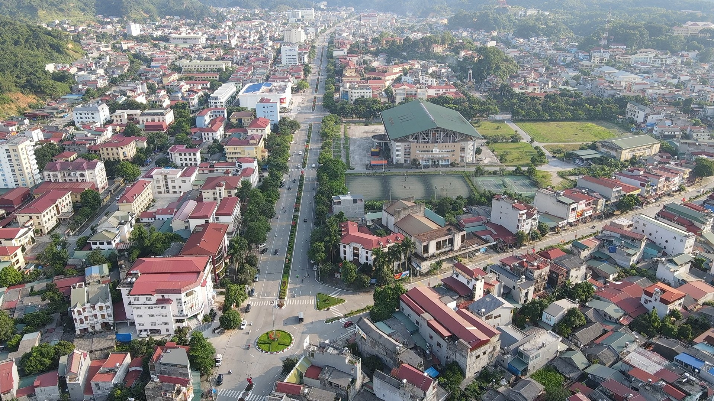
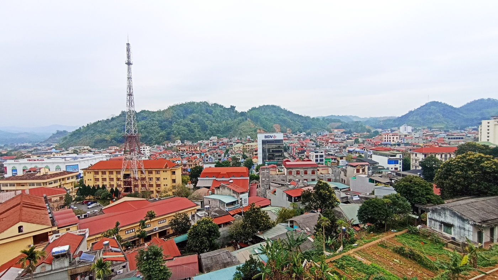
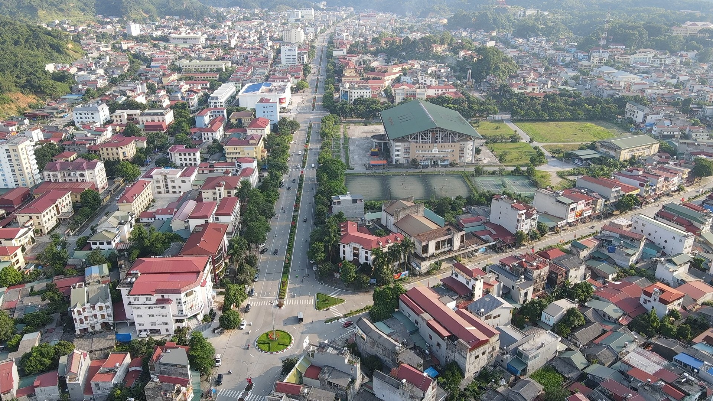
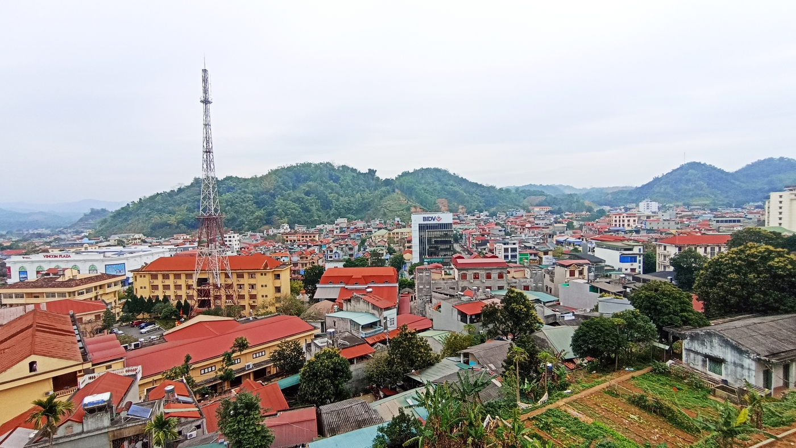

ĐẶC ĐIỂM
Giới thiệu: Cao bằng là một tỉnh miền núi của Việt Nam, được thiên nhiên ưu đãi cho một vẻ đẹp hoang sơ và hùng vĩ của núi rừng, được mệnh danh là “Miền non nước” với những dãy núi cao và những dòng thác oai nghi.
Dân số: theo số liệu năm 2022, dân số Cao Bằng theo ước tính là 543.100 người, mật độ dân số do chịu ảnh hưởng của địa hình đa phần là đồi núi nên khá thấp (81 người/km2).
Vị trí: Nằm ở vùng Đông Bắc Bộ của Việt Nam, là một cửa ngỏ giao thương của Việt Nam-Trung Quốc do có vị trí ở biên giới, giáp với các tỉnh Hà Giang, Tuyên Quang, Bắc Kạn, Lạng Sơn, Quảng Tây (Trung Quốc), diện tích 6.700,39km2.
 


